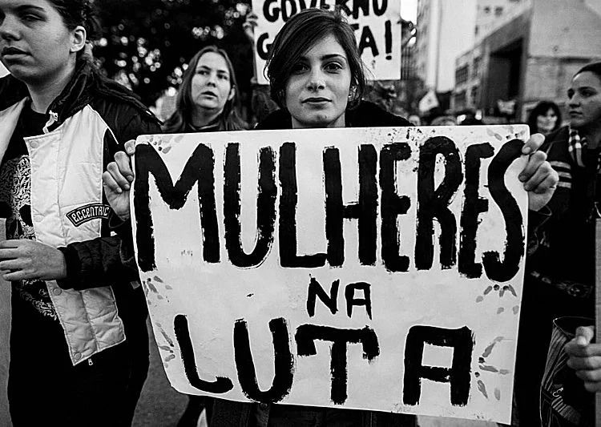
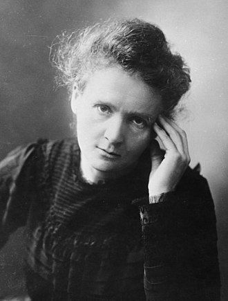
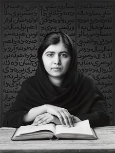
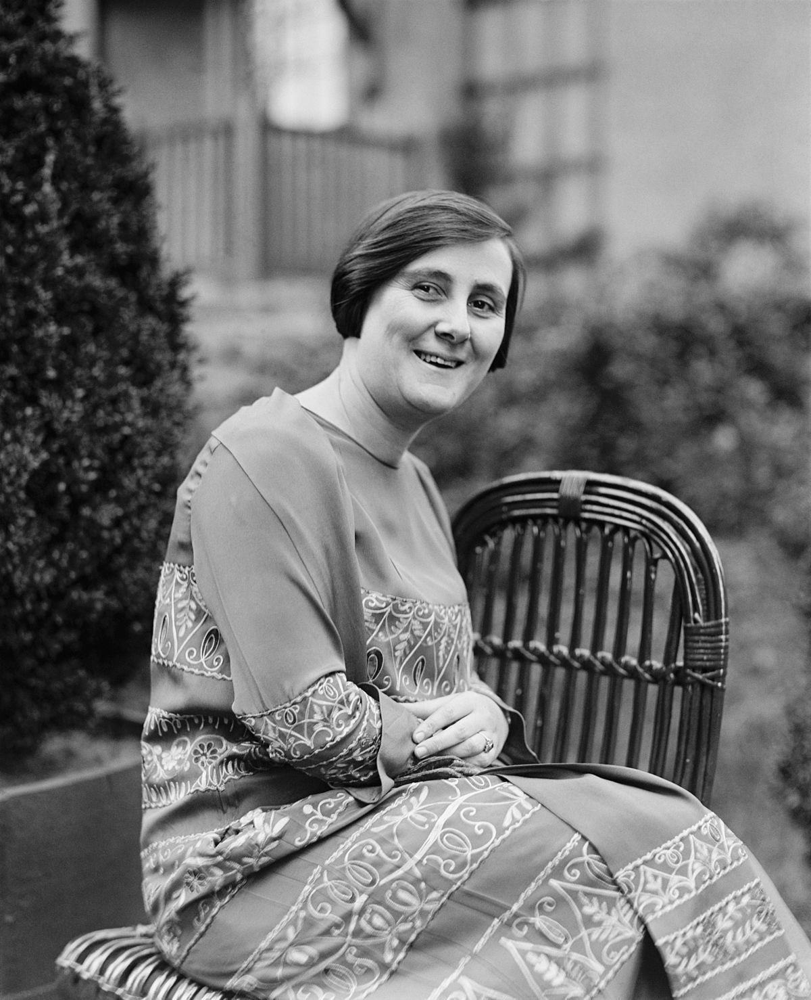
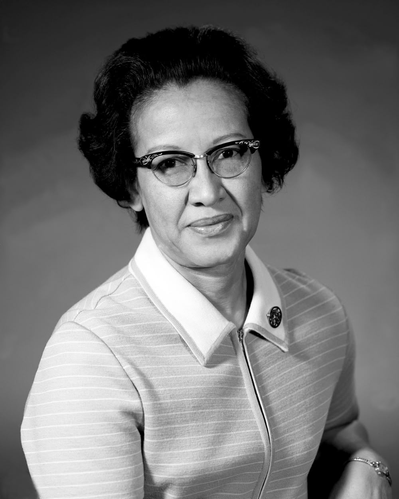

Direito à educação básica
Uma lei autorizou meninas a frequentarem escolas de primeiras letras. Antes disso, o acesso à educação formal era bastante limitado para elas.

Igualdade é um direito, não um privilégio.
Ser mulher ainda significa enfrentar barreiras que não deveriam existir. A violência, o machismo, a desigualdade salarial e a falta de oportunidades demonstram que os direitos conquistados ainda não são plenamente respeitados. O problema não está na capacidade das mulheres, mas nas desigualdades que a sociedade continua reproduzindo.
A igualdade não será alcançada apenas com leis, mas também com mudanças na educação e no comportamento da sociedade. É necessário ensinar o respeito desde cedo, combater atitudes machistas, garantir segurança às mulheres e oferecer as mesmas oportunidades de crescimento.
Este projeto utiliza a internet como ferramenta de conscientização. Queremos apresentar as desigualdades que ainda existem e incentivar atitudes que contribuam para uma sociedade mais justa.
Uma sociedade só avança de verdade quando todas as pessoas têm liberdade para escolher seus caminhos, ocupar espaços e realizar seus sonhos, sem limitações impostas pelo gênero. A igualdade de gênero é essencial para construir um mundo mais justo, seguro e cheio de oportunidades.

Ao longo da história, as mulheres precisaram lutar para conquistar direitos que hoje são fundamentais, como estudar, votar, trabalhar e participar das decisões da sociedade. Essas conquistas foram resultado de movimentos e da coragem de muitas mulheres que enfrentaram o preconceito e a desigualdade. Apesar dos avanços, essa luta ainda não terminou. Garantir igualdade significa respeitar as conquistas do passado e continuar construindo um futuro com os mesmos direitos e oportunidades para todos.
No Brasil, o direito ao voto feminino foi conquistado em 1932, após décadas de mobilização. Essa conquista representou um avanço importante na participação das mulheres na vida política e demonstrou a força da organização feminina.
Os direitos das mulheres foram conquistados ao longo de muitos anos de mobilização e luta. Conhecer essa trajetória ajuda a compreender a importância de continuar buscando uma sociedade mais igualitária.
Uma lei autorizou meninas a frequentarem escolas de primeiras letras. Antes disso, o acesso à educação formal era bastante limitado para elas.
Mulheres passaram a ter autorização legal para ingressar no ensino superior no Brasil, embora ainda enfrentassem muitas barreiras.
O Código Eleitoral reconheceu o direito das mulheres de votar e serem votadas, resultado de uma longa mobilização pelo direito à participação política.
O Estatuto da Mulher Casada retirou a necessidade de autorização do marido para que a mulher casada pudesse trabalhar.
A Constituição Federal estabeleceu a igualdade de direitos e deveres entre homens e mulheres.
Foi criada uma lei para prevenir e combater a violência doméstica e familiar contra a mulher.
O feminicídio passou a ser considerado uma qualificadora do crime de homicídio no Brasil, reconhecendo a gravidade dos assassinatos de mulheres por razões de gênero.
Cada conquista representa uma parte de uma luta que ainda continua.
As mulheres estão presentes em todas as áreas da sociedade, contribuindo para a ciência, a educação, a política, a cultura e a economia. Mesmo enfrentando preconceitos e obstáculos, elas demonstram diariamente sua capacidade de transformar o mundo. Valorizar suas conquistas e garantir que tenham espaço para participar das decisões é fundamental para uma sociedade mais democrática e igualitária.
A educação é uma das principais ferramentas para combater a desigualdade de gênero. Meninas e meninos devem ter as mesmas oportunidades de aprender, desenvolver habilidades e escolher suas profissões. É importante combater estereótipos que limitam os sonhos das crianças e incentivar a participação das meninas em todas as áreas do conhecimento, inclusive na ciência, na tecnologia e na engenharia.
Apesar dos avanços, ainda existem desafios relacionados aos estereótipos de gênero, à desigualdade de oportunidades e à participação feminina em determinadas áreas científicas. Incentivar meninas a desenvolverem seus talentos é essencial para ampliar suas possibilidades no futuro.
Mesmo com grandes avanços, muitas mulheres ainda enfrentam dificuldades no mercado de trabalho. Diferenças salariais, poucas oportunidades de liderança, preconceito e a responsabilidade desigual pelas tarefas domésticas são alguns dos desafios existentes. Para mudar essa realidade, é necessário garantir salários justos, respeito profissional e oportunidades iguais de crescimento, independentemente do gênero.
Outro desafio é a sobrecarga do trabalho doméstico e do cuidado familiar, atividades que muitas vezes não são remuneradas e acabam limitando o tempo disponível para estudo, descanso e desenvolvimento profissional das mulheres.
Os dados ajudam a mostrar que a desigualdade de gênero não está apenas nas atitudes e nos preconceitos. Ela também aparece na distribuição do tempo, nas oportunidades e nas condições de trabalho.
Média semanal dedicada aos afazeres domésticos e aos cuidados de pessoas.
Média semanal dedicada às mesmas atividades.
Trabalhavam em jornadas de até 30 horas semanais.
Trabalhavam em jornadas de até 30 horas semanais.
Fonte: IBGE — Estatísticas de Gênero, indicadores sociais das mulheres no Brasil (2024). Dados referentes a 2022.
Os números mostram como as responsabilidades domésticas ainda são distribuídas de maneira desigual. Essa sobrecarga pode afetar o tempo disponível para estudar, trabalhar e descansar.
A violência contra a mulher é uma das formas mais graves de desigualdade. Ela pode acontecer de diferentes maneiras, como violência física, psicológica, sexual, moral e patrimonial. Muitas mulheres vivem situações de medo e dependência, o que dificulta a busca por ajuda. Combater essa realidade exige informação, acolhimento, denúncia e políticas públicas que protejam as vítimas. Nenhuma mulher deve ter sua liberdade ou segurança ameaçada.
A Lei Maria da Penha, criada em 2006, é um importante instrumento de proteção. Ela estabelece mecanismos para prevenir e combater a violência doméstica e familiar contra a mulher. Conhecer os direitos e os canais de atendimento é fundamental para ampliar a proteção e o acolhimento.
A construção de uma sociedade igualitária depende da participação de todos. Respeitar as mulheres, combater comentários preconceituosos, dividir as responsabilidades e não ignorar situações de violência são atitudes que fazem diferença. A mudança também começa dentro de casa, nas escolas, no trabalho e nas relações do dia a dia. Pequenas atitudes podem contribuir para transformar comportamentos e construir uma sociedade mais respeitosa.
A internet pode ser uma grande ferramenta de conscientização. Por meio deste site, queremos informar sobre a desigualdade de gênero, apresentar os desafios enfrentados pelas mulheres e incentivar atitudes que contribuam para a mudança. Acreditamos que compartilhar conhecimento é um passo importante para combater o preconceito e promover o respeito. Quando a informação chega às pessoas, ela pode transformar pensamentos e inspirar novas atitudes.
Conheça mulheres que enfrentaram barreiras e deixaram contribuições importantes para a sociedade.

Cientista pioneira nas pesquisas sobre radioatividade. Recebeu o Nobel de Física em 1903 e o Nobel de Química em 1911, tornando-se uma referência na história da ciência.

Ativista paquistanesa que defende o direito das meninas à educação. Em 2014, recebeu o Prêmio Nobel da Paz aos 17 anos.

Bióloga e ativista brasileira que teve papel importante na luta pelo voto feminino e pela participação das mulheres na política.

Matemática afro-americana que realizou cálculos fundamentais para missões espaciais da NASA, contribuindo para a história da exploração espacial.
A ONU estabeleceu metas para alcançar a igualdade de gênero. Clique em cada uma para descobrir o que ela propõe.
Selecione uma meta para saber mais.
Existem fatos importantes sobre a igualdade de gênero que ajudam a compreender as conquistas e os desafios enfrentados pelas mulheres.
O Brasil reconheceu o direito das mulheres ao voto em 1932. A conquista foi resultado de muitos anos de mobilização feminina.
Em 1975, a ONU celebrou o primeiro Ano Internacional da Mulher, dando maior visibilidade mundial à luta pelos direitos femininos.
Marie Curie foi a primeira mulher a receber um Prêmio Nobel e a primeira pessoa a conquistar dois Nobel em áreas científicas diferentes.
Garantir que meninas tenham acesso à educação de qualidade é uma das formas de ampliar oportunidades e combater desigualdades.
Afazeres domésticos e cuidados com familiares também são trabalho, mesmo quando não recebem remuneração.
Combater o machismo, dividir responsabilidades e respeitar as diferenças são atitudes que ajudam a construir uma sociedade mais justa.
Conhecimento é uma ferramenta poderosa para transformar a sociedade. Compartilhe informação e faça parte da mudança!
Você sabe identificar situações de desigualdade de gênero?
Um mundo mais justo começa quando todas as pessoas têm os mesmos direitos, oportunidades e liberdade para construir seus próprios caminhos. A igualdade de gênero não é apenas uma conquista das mulheres, mas um avanço para toda a sociedade. Essa transformação depende de cada um de nós.
Mulheres que sofrem violência não estão sozinhas. Existem serviços gratuitos que oferecem orientação, acolhimento e proteção.
180 — Central de Atendimento à Mulher: orientação e registro de denúncias.
190 — Polícia Militar: em situações de emergência.
As informações apresentadas neste projeto foram pesquisadas em fontes oficiais e instituições confiáveis.
1. Nações Unidas no Brasil — ODS 5: Igualdade de gênero e metas da Agenda 2030.
2. IPEA — Objetivos de Desenvolvimento Sustentável: Metas brasileiras da ODS 5.
3. IBGE Educa: As mulheres do Brasil: educação e trabalho.
4. Governo Federal — Ministério das Mulheres: Lei Maria da Penha.
Acesso em: 24 de novembro de 2026.
A igualdade de gênero não é apenas um direito das mulheres, mas uma necessidade para construir uma sociedade mais justa, segura e cheia de oportunidades.
Cada atitude de respeito, cada oportunidade oferecida e cada desigualdade combatida representam um passo em direção à mudança.
As imagens utilizadas neste projeto foram obtidas na internet para fins educativos e de apresentação escolar. Os créditos de autoria e as fontes são indicados sempre que disponíveis.